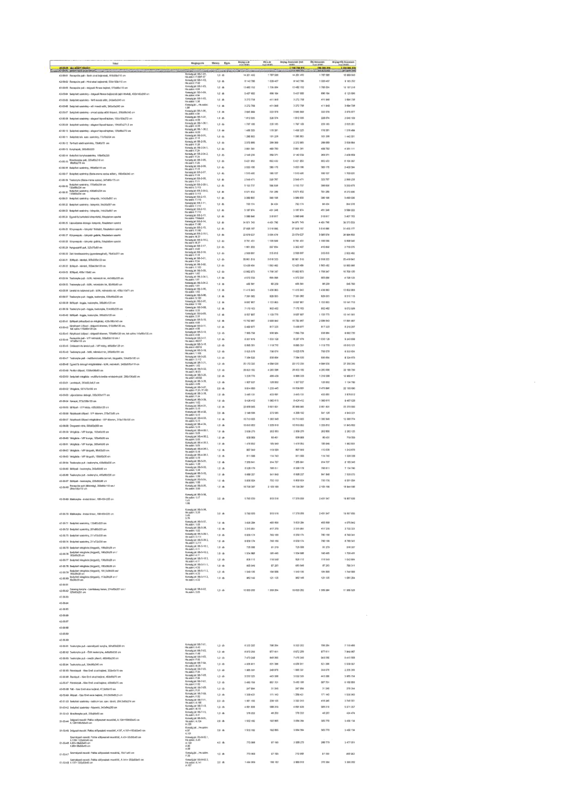

| Tétel | Megjegyzés | Menny. | Egys. | Anyag e.ár (net HUF) | Díj e.ár (net HUF) | Anyag összesen (net HUF) | Díj összesen (net HUF) | Anyag+Díj összesen (net HUF) |
|---|---|---|---|---|---|---|---|---|
| 42-00-00 MOBILIÁK | NaN | NaN | NaN | 0 | 0 | 778 333 344 | 29 555 448 | 807 888 792 |
| 42-00-01 Recepciós pult - Bank irodai bejárati, 510x110x110 cm | Konszig jel: B0-01-01, He.szám: F.09, F.07 | 1,0 | db | 14 201 493 | 1 787 550 | 14 201 493 | 1 787 550 | 15 989 043 |
| 42-00-02 Recepciós pult - Házi orvosi bejáratnál, 530x100x110 cm | Konszig jel: B0-01-02, He.szám: F.02 | 1,0 | db | 8 142 755 | 1 020 497 | 8 142 755 | 1 020 497 | 9 163 252 |
| 42-00-03 Recepciós pult - Műszaki és üzemeltetési bejárat, 570x100x110 cm | Konszig jel: B0-01-03, He.szám: F.02 | 1,0 | db | 13 452 152 | 1 700 064 | 13 452 152 | 1 700 064 | 15 152 216 |
| 42-00-04 Beépített szekrény - dolgozói fitness öltözőnél (alsó lábazat), 422x145x250 cm | Konszig jel: B0-11-04, He.szám: 1.35 | 1,0 | db | 5 437 630 | 686 184 | 5 437 630 | 686 184 | 6 123 814 |
| 42-00-05 Beépített szekrény - folyosó táskatároló, 243x55x250 cm | Konszig jel: B0-11-05, He.szám: 1.34 | 1,0 | db | 3 272 758 | 411 948 | 3 272 758 | 411 948 | 3 684 706 |
| 42-00-06 Beépített szekrény - női öltöző előtt, 240x55x250 cm | Konszig jel: B0-11-06, He.szám: 1.58 | 1,0 | db | 3 272 758 | 411 948 | 3 272 758 | 411 948 | 3 684 706 |
| 42-00-07 Beépített szekrény - orvosi szoba előtti folyosó, 200x60x250 cm | Konszig jel: B0-11-07, He.szám: A.54 | 1,0 | db | 2 645 999 | 330 078 | 2 645 999 | 330 078 | 2 976 077 |
| 42-00-08 Beépített szekrény - alagsori öltözőfolyosón, 135x105x272 cm | Konszig jel: B0-11-08, He.szám: A.59 | 1,0 | db | 1 812 036 | 228 074 | 1 812 036 | 228 074 | 2 040 110 |
| 42-00-09 Beépített szekrény - alagsori öltözőfolyosón, 135x105x271,5 cm | Konszig jel: B0-11-09, He.szám: A.58 | 1,0 | db | 1 797 108 | 226 183 | 1 797 108 | 226 183 | 2 023 291 |
| 42-00-10 Szekrény kávéautomata és vízgép részére, 123x80x272 cm | Konszig jel: B0-11-08.2, He.szám: A.59 | 1,0 | db | 1 400 233 | 176 251 | 1 400 233 | 176 251 | 1 576 484 |
| 42-00-11 Beépített szekrény, 70x50x250 cm | Konszig jel: B0-11-07, He.szám: A.54 | 1,0 | db | 1 280 803 | 161 228 | 1 280 803 | 161 228 | 1 442 031 |
| 42-00-12 Folyosói elszívó szekrény, 70x50x70 cm | Konszig jel: B0-2-03, He.szám: A.54 | 1,0 | db | 2 273 805 | 286 089 | 2 273 805 | 286 089 | 2 559 894 |
| 42-00-13 Konyhapult, 302x60x220 | Konszig jel: B0-2-04.1, He.szám: A.52 | 1,0 | db | 3 851 361 | 483 750 | 3 851 361 | 483 750 | 4 335 111 |
| 42-00-14 Beépített konyhaszekrény, 163x63x220 | Konszig jel: B0-2-04.2, He.szám: A.52 | 1,0 | db | 2 143 238 | 269 371 | 2 143 238 | 269 371 | 2 412 609 |
| 42-00-15 Főzősziget (Bútorasztalos szerkezet), 247x82x115 cm (88x88x215 cm) | Konszig jel: B0-2-05, He.szám: F.05 | 1,0 | db | 5 431 854 | 682 433 | 5 431 854 | 682 433 | 6 114 287 |
| 42-00-16 Beépített szekrény, 180x60x220 cm | Konszig jel: B0-11-06, He.szám: A.58 | 1,0 | db | 3 020 189 | 380 175 | 3 020 189 | 380 175 | 3 400 364 |
| 42-00-17 Beépített szekrény (Baba-mama szoba előtt), 118x53x240 cm | Konszig jel: B0-2-07, He.szám: F.19 | 1,0 | db | 1 513 495 | 190 107 | 1 513 495 | 190 107 | 1 703 601 |
| 42-00-18 Beépített szekrény (Baba-mama szoba), 247x60x175 cm | Konszig jel: B0-2-08, He.szám: F.19 | 1,0 | db | 2 546 471 | 320 387 | 2 546 471 | 320 387 | 2 866 858 |
| 42-00-19 Beépített szekrény, 178x63x214 cm | Konszig jel: B0-2-09.1, He.szám: F.02 | 1,0 | db | 3 153 737 | 396 936 | 3 153 737 | 396 936 | 3 550 672 |
| 42-00-20 Beépített szekrény, 400x63x235 cm | Konszig jel: B0-2-09.2, He.szám: F.02 | 1,0 | db | 5 571 632 | 701 268 | 5 571 632 | 701 268 | 6 272 900 |
| 42-00-21 Beépített szekrény - konyhai, 143x63x267 cm | Konszig jel: B0-2-10, He.szám: F.01 | 1,0 | db | 3 099 802 | 390 198 | 3 099 802 | 390 198 | 3 490 000 |
| 42-00-22 Beépített szekrény - konyhai, 34x55x267 cm | Konszig jel: B0-2-11, He.szám: F.01 | 1,0 | db | 750 174 | 94 404 | 750 174 | 94 404 | 844 578 |
| 42-00-23 Beépített szekrény - konyhai, 144x55x267 cm | Konszig jel: B0-2-12, He.szám: F.01 | 1,0 | db | 3 197 974 | 401 248 | 3 197 974 | 401 248 | 3 599 222 |
| 42-00-24 Egyedi fix burkolatú kávéasztal, Részletterv szerint | Konszig jel: B0-2-13, He.szám: Földszint | 1,0 | db | 3 088 946 | 318 817 | 3 088 946 | 318 817 | 3 407 763 |
| 42-00-25 Lépcsőzetes dobogó-könyvtár, Részletterv szerint | Konszig jel: B0-3-01, He.szám: F.100 | 1,0 | db | 34 971 743 | 4 401 790 | 34 971 743 | 4 401 790 | 39 373 533 |
| 42-00-26 Előnyerőpolc - könyvtár lépcsőhöz, Részletterv szerint | Konszig jel: B0-3-02, He.szám: F.100 | 1,0 | db | 27 938 187 | 3 516 590 | 27 938 187 | 3 516 590 | 31 454 777 |
| 42-00-27 Erkélypolcok - könyvtár galéria, Részletterv szerint | Konszig jel: B0-3-03, He.szám: F.100 | 1,0 | db | 23 779 027 | 2 995 578 | 23 779 027 | 2 995 578 | 26 774 605 |
| 42-00-28 Beépített szekrény, 128x55x221 cm | Konszig jel: B0-11-03.2, He.szám: A.53 | 1,0 | db | 8 791 451 | 1 106 489 | 8 791 451 | 1 106 489 | 9 897 940 |
| 42-00-29 Panelfal, 325x257 cm | Konszig jel: B0-3-17, He.szám: F.09 | 2,0 | db | 1 501 203 | 207 834 | 3 002 407 | 415 668 | 3 418 075 |
| 42-00-30 Zárt tárolószekrény (függesztett mő.), 70x33x377 cm | Konszig jel: B0-3-19, He.szám: 1.41 | 1,0 | db | 2 506 867 | 315 615 | 2 506 867 | 315 615 | 2 822 482 |
| 42-00-31 Előpult - kávézó, 650x230x103 cm | Konszig jel: B0-3-01, He.szám: F.16 | 1,0 | db | 20 001 539 | 2 518 323 | 20 001 539 | 2 518 323 | 22 519 862 |
| 42-00-32 Büfépult, 252x64x103 cm | Konszig jel: B0-3-02, He.szám: F.16 | 1,0 | db | 12 420 404 | 1 563 462 | 12 420 404 | 1 563 462 | 13 983 866 |
| 42-00-33 Sütőpult, 450x110x92 cm | Konszig jel: B0-3-03, He.szám: 1.02 | 1,0 | db | 13 952 873 | 1 756 317 | 13 952 873 | 1 756 317 | 15 709 190 |
| 42-00-34 Tálalópult - büfé, háttároló rácskar, 442x62x230 cm | Konszig jel: B0-3-04, He.szám: 1.01 | 1,0 | db | 6 872 230 | 865 893 | 6 872 230 | 865 893 | 7 738 123 |
| 42-00-35 Teakonyha pult - büfé, 168x62x230 cm, kávéfőzővel | Konszig jel: B0-3-05, He.szám: 1.01 | 1,0 | db | 3 410 248 | 429 285 | 3 410 248 | 429 285 | 3 839 533 |
| 42-00-36 Teakonyha pult - kispult, kávékonyha, 470x120x115 cm | Konszig jel: B0-3-06, He.szám: 2.112 | 1,0 | db | 11 413 043 | 1 436 553 | 11 413 043 | 1 436 553 | 12 849 596 |
| 42-00-37 Teakonyha pult - nagypult, kávékonyha, 625x80x230 cm | Konszig jel: B0-3-06, He.szám: 2.112 | 1,0 | db | 7 351 082 | 926 033 | 7 351 082 | 926 033 | 8 277 115 |
| 42-00-38 Büfépult - kávézó, háttároló, 360x60x120 cm | Konszig jel: B0-3-07, He.szám: F.16 | 1,0 | db | 8 997 807 | 1 133 303 | 8 997 807 | 1 133 303 | 10 141 110 |
| 42-00-39 Teakonyha pult - kispult, kávékonyha, 514x62x230 cm | Konszig jel: B0-3-08, He.szám: 1.41 | 1,0 | db | 7 170 103 | 902 482 | 7 170 103 | 902 482 | 8 072 585 |
| 42-00-40 Büfépult - kávézó, háttároló, 350x60x120 cm | Konszig jel: B0-3-09, He.szám: F.16 | 1,0 | db | 8 997 807 | 1 133 373 | 8 997 807 | 1 133 373 | 10 141 180 |
| 42-00-41 Büfépult (előcsarnok - jegykiadás), 422x110x140 cm | Konszig jel: B0-4-01, He.szám: F.02 | 1,0 | db | 15 792 167 | 2 008 840 | 15 792 167 | 2 008 840 | 17 801 007 |
| 42-00-42 Teakonyha pult - dolgozói konyha, alsó/felső, 510x62x130 cm, fali szekrény 510x60x120 cm | Konszig jel: B0-4-02, He.szám: 4.02 | 1,0 | db | 5 400 977 | 817 320 | 5 400 977 | 817 320 | 6 218 297 |
| 42-00-43 Kávézó pult hátfal - dolgozói konyha, háttároló, fali szekrény, 110x80x120 cm | Konszig jel: B0-4-03, He.szám: 4.02 | 1,0 | db | 7 855 750 | 986 980 | 7 855 750 | 986 980 | 8 842 730 |
| 42-00-44 Teakonyha pult - nagypult, dolgozói konyha, háttároló, 147x63x130 cm | Konszig jel: B0-4-04, He.szám: 4.02 | 1,0 | db | 8 207 876 | 1 033 126 | 8 207 876 | 1 033 126 | 9 241 002 |
| 42-00-45 Teakonyha pult - VIP lobby, 458x62x130 cm | Konszig jel: B0-3-12, He.szám: 4.31 | 1,0 | db | 8 885 351 | 1 119 770 | 8 885 351 | 1 119 770 | 10 005 121 |
| 42-00-46 Teakonyha pult - iroda, 250x62x130/131 cm | Konszig jel: B0-3-15, He.szám: 4.11 | 1,0 | db | 5 625 578 | 708 076 | 5 625 578 | 708 076 | 6 333 654 |
| 42-00-47 Teakonyha pult - melléképület szociális termeinek, tárgyalóknak, 334x62x130/131 cm | Konszig jel: B0-3-16, He.szám: M0.01 | 1,0 | db | 7 384 520 | 930 454 | 7 384 520 | 930 454 | 8 314 974 |
| 42-00-48 Egyedi fix dobogó tölgyfa burkolat, süllyesztett, sávos, 542x330x10+21,5 cm | Konszig jel: B0-3-21, He.szám: F.100 | 1,0 | db | 23 173 325 | 4 086 030 | 23 173 325 | 4 086 030 | 27 259 355 |
| 42-00-49 Pavilon büfépult, 1250x340x250 cm | Konszig jel: B0-3-22, He.szám: F.16 | 1,0 | db | 28 923 192 | 4 263 596 | 28 923 192 | 4 263 596 | 33 186 788 |
| 42-00-50 Beépített szekrény - multifunkcionális rendezvénytér, 280x130x250 cm | Konszig jel: B0-3-23, He.szám: F.09 | 3,0 | db | 3 228 776 | 403 429 | 9 686 328 | 1 210 287 | 10 896 615 |
| 42-00-51 Virágláda, 32x26x105/110 cm | Konszig jel: B0-3-24, He.szám: F.09 | 1,0 | db | 1 007 927 | 126 855 | 1 007 927 | 126 855 | 1 134 782 |
| 42-00-52 Virágláda, 57x100x105/110 cm | Konszig jel: B0-3-25, He.szám: F.09 | 2,0 | db | 9 314 800 | 1 235 445 | 18 629 600 | 2 470 890 | 21 100 490 |
| 42-00-53 Lépcsőzetes dobogó, 350x235x177 cm | Konszig jel: B0-3-26, He.szám: F.04 | 1,0 | db | 8 207 876 | 1 033 126 | 8 207 876 | 1 033 126 | 9 241 002 |
| 42-00-54 Falitükör, 375x240x2 cm | Konszig jel: B0-4-10, He.szám: F.05 | 1,0 | db | 8 426 412 | 1 060 615 | 8 426 412 | 1 060 615 | 9 487 027 |
| 42-00-55 Büfépult - VIP lobby, 420x230x103 cm | Konszig jel: B0-4-30, He.szám: 4.31 | 1,0 | db | 20 669 985 | 2 601 601 | 20 669 985 | 2 601 601 | 23 271 586 |
| 42-00-56 Beépített szekrény - VIP irodában, 215x72x235 cm | Konszig jel: B0-4-31, He.szám: 4.30 | 2,0 | db | 2 149 596 | 270 564 | 4 299 192 | 541 128 | 4 840 320 |
| 42-00-57 Beépített gipszkarton szekrényváz - VIP irodában, 515x78x100 cm | Konszig jel: B0-4-32, He.szám: 4.30 | 1,0 | db | 10 715 925 | 1 352 849 | 10 715 925 | 1 352 849 | 12 068 774 |
| 42-00-58 Üvegajtós vitrin, 500x30x235 cm | Konszig jel: B0-4-34, He.szám: 4.31 | 1,0 | db | 10 010 052 | 1 253 610 | 10 010 052 | 1 253 610 | 11 263 662 |
| 42-00-59 Virágláda - VIP lounge, 162x60x50 cm | Konszig jel: B0-4-35.1, He.szám: 5.05 | 1,0 | db | 2 030 275 | 262 850 | 2 030 275 | 262 850 | 2 293 125 |
| 42-00-60 Virágláda - VIP lounge, 107x80x50 cm | Konszig jel: B0-4-35.2, He.szám: 5.05 | 1,0 | db | 638 908 | 80 451 | 638 908 | 80 451 | 719 359 |
| 42-00-61 Virágláda - VIP lounge, 208x50x50 cm | Konszig jel: B0-4-35.3, He.szám: 5.05 | 1,0 | db | 1 476 852 | 185 949 | 1 476 852 | 185 949 | 1 662 801 |
| 42-00-62 Virágláda - VIP tárgyaló, 92x50x30 cm | Konszig jel: B0-4-36.1, He.szám: 5.10 | 1,0 | db | 897 549 | 113 075 | 897 549 | 113 075 | 1 010 624 |
| 42-00-63 Virágláda - VIP tárgyaló, 110x50x30 cm | Konszig jel: B0-4-36.2, He.szám: 5.10 | 1,0 | db | 911 598 | 114 740 | 911 598 | 114 740 | 1 026 338 |
| 42-00-64 Teakonyha pult - konyha, 435x62x230 cm | Konszig jel: B0-5-31, He.szám: 5.13 | 1,0 | db | 7 255 641 | 914 307 | 7 255 641 | 914 307 | 8 169 948 |
| 42-00-65 Büfépult - bar konyha, 243x62x230 cm | Konszig jel: B0-5-32, He.szám: 5.30 | 1,0 | db | 6 328 179 | 796 511 | 6 328 179 | 796 511 | 7 124 690 |
| 42-00-66 Teakonyha pult - konyha, 407x62x230 cm | Konszig jel: B0-5-33, He.szám: 5.30 | 1,0 | db | 6 688 227 | 841 846 | 6 688 227 | 841 846 | 7 530 073 |
| 42-00-67 Büfépult - teakonyha, 222x80x92 cm | Konszig jel: B0-5-34, He.szám: 5.01 | 1,0 | db | 5 800 924 | 730 130 | 5 800 924 | 730 130 | 6 531 054 |
| 42-00-68 Szekrény kávéautomata és vízgép részére, 260x55x105 cm (238x70x103 cm) | Konszig jel: B0-5-35, He.szám: 5.01 | 1,0 | db | 16 738 387 | 2 105 195 | 16 738 387 | 2 105 195 | 18 843 582 |
| 42-00-69 Mosdópult - irodai térben, 168+60x225 cm | Konszig jel: B0-5-36, He.szám: 1.17, 1.41 | 3,0 | db | 5 792 020 | 810 516 | 17 376 059 | 2 431 547 | 19 807 606 |
| 42-00-70 Mosdópult - irodai térben, 168+60x225 cm | Konszig jel: B0-5-36, He.szám: 2.29, 3.45 | 3,0 | db | 5 792 020 | 810 516 | 17 376 059 | 2 431 547 | 19 807 606 |
| 42-00-71 Beépített szekrény, 182x55x250 cm | Konszig jel: B0-5-37, He.szám: 5.25 | 1,0 | db | 3 620 284 | 455 858 | 3 620 284 | 455 858 | 4 076 142 |
| 42-00-72 Beépített szekrény, 237x55x250 cm | Konszig jel: B0-5-38, He.szám: 5.25 | 1,0 | db | 3 315 951 | 417 370 | 3 315 951 | 417 370 | 3 733 321 |
| 42-00-73 Beépített szekrény, 211x72x230 cm | Konszig jel: B0-11-12, He.szám: 2.112 | 1,0 | db | 6 039 174 | 760 166 | 6 039 174 | 760 166 | 6 799 340 |
| 42-00-74 Beépített szekrény, 211x72x230 cm | Konszig jel: B0-11-12, He.szám: 2.111 | 1,0 | db | 6 039 174 | 760 166 | 6 039 174 | 760 166 | 6 799 340 |
| 42-00-75 Beépített szekrény (tárgyaló), 180x60x225 cm / 135x60x225 cm | Konszig jel: B0-5-18.1, He.szám: 4.11 | 1,0 | db | 1 524 525 | 195 425 | 1 524 525 | 195 425 | 1 720 450 |
| 42-00-76 Beépített szekrény (tárgyaló), 180x60x225 cm / 135x60x225 cm | Konszig jel: B0-5-18.2, He.szám: 4.11 | 1,0 | db | 926 115 | 116 549 | 926 115 | 116 549 | 1 042 664 |
| 42-00-77 Beépített szekrény (tárgyaló), 135x35x235 cm | Konszig jel: B0-5-18.3, He.szám: 4.11 | 1,0 | db | 695 642 | 87 269 | 695 642 | 87 269 | 782 911 |
| 42-00-78 Beépített virágláda (tárgyaló), 181,5x25x25 cm / 110x20x28 cm | Konszig jel: B0-5-11.1, He.szám: 4.11 | 1,0 | db | 1 549 106 | 194 938 | 1 549 106 | 194 938 | 1 744 044 |
| 42-00-79 Beépített virágláda (tárgyaló), 110x20x28 cm / 110x20x28 cm | Konszig jel: B0-5-11.3, He.szám: 4.11 | 1,0 | db | 962 149 | 121 135 | 962 149 | 121 135 | 1 083 284 |
| 42-00-80 Catering konyha - L-alakú fali bútor, 371x150x231 cm / 325x62x231 cm | Konszig jel: B0-6-02, He.szám: 2.05 | 1,0 | db | 10 630 252 | 1 339 254 | 10 630 252 | 1 339 254 | 11 969 506 |
| 42-00-91 Teakonyha pult - személyzeti konyha, 597x180x228 cm | Konszig jel: B0-7-01, He.szám: A.46 | 1,0 | db | 6 322 202 | 796 264 | 6 322 202 | 796 264 | 7 118 466 |
| 42-00-92 Teakonyha pult - ÉK irodák konyha, 448x56x230 cm | Konszig jel: B0-7-02, He.szám: F.69 | 1,0 | db | 6 972 256 | 877 611 | 6 972 256 | 877 611 | 7 849 867 |
| 42-00-93 Teakonyha pult - tanácsi konyha, 460x60x230 cm | Konszig jel: B0-7-03, He.szám: F.85 | 1,0 | db | 7 470 248 | 940 338 | 7 470 248 | 940 338 | 8 410 586 |
| 42-00-94 Teakonyha pult, 324x62x235 cm | Konszig jel: B0-7-04, He.szám: 4.22 | 1,0 | db | 4 938 911 | 621 396 | 4 938 911 | 621 396 | 5 560 307 |
| 42-00-95 Falitükör, Elnöki iroda - Elnöki irodai bejárat, 222x25x235 cm | Konszig jel: B0-7-05, He.szám: A.120 | 1,0 | db | 1 985 391 | 249 978 | 1 985 391 | 249 978 | 2 235 369 |
| 42-00-96 Falitükör, Elnöki iroda - Elnöki iroda irodai bejárat, 400x25x235 cm | Konszig jel: B0-7-06, He.szám: A.120 | 1,0 | db | 3 532 355 | 443 399 | 3 532 355 | 443 399 | 3 975 754 |
| 42-00-97 Falitükör, Elnöki iroda - előszoba, 620x25x235 cm | Konszig jel: B0-7-07, He.szám: A.121 | 1,0 | db | 5 463 155 | 687 701 | 5 463 155 | 687 701 | 6 150 856 |
| 42-00-98 Pult - fali tartó résszel, 30x25x10 cm | Konszig jel: B0-7-09, He.szám: F.02 | 1,0 | db | 247 994 | 31 240 | 247 994 | 31 240 | 279 234 |
| 42-00-99 Álapult - Házi Orvosi váró bejárati, 210x35x10,5 cm | Konszig jel: B0-7-10, He.szám: F.02 | 1,0 | db | 1 359 421 | 171 145 | 1 359 421 | 171 145 | 1 530 566 |
| 42-01-00 Beépített szekrény - hallban, terasz felől, 258x3,5/24x274 cm | Konszig jel: B0-8-01, He.szám: A.120 | 2,0 | db | 1 661 155 | 209 120 | 3 322 310 | 418 240 | 3 740 551 |
| 42-01-02 Beépített szekrény - folyosó, 343x62x235 cm | Konszig jel: B0-8-03, He.szám: 4.11 | 1,0 | db | 4 631 938 | 583 319 | 4 631 938 | 583 319 | 5 215 257 |
| 42-01-03 Mosdókagyló pult, 222x60x15 cm | Konszig jel: B0-8-05, He.szám: A.41 | 1,0 | db | 379 222 | 45 252 | 379 222 | 45 252 | 424 474 |
| 42-01-04 Dolgozói mosdó: Pultba süllyesztett mosdókagyló, A.124= 150x52x8,5 cm / A.122=180x52x8,5 cm | Konszig jel: B0-8-12.1, He.szám: A.124, A.122 | 2,0 | db | 1 532 192 | 192 895 | 3 064 384 | 385 790 | 3 450 174 |
| 42-01-05 Dolgozói mosdó: Pultba süllyesztett mosdókagyló, 4.07, 4.101=180x52x8,5 cm | Konszig jel: B0-8-12.1, He.szám: 4.07, 4.101 | 2,0 | db | 1 532 192 | 192 895 | 3 064 384 | 385 790 | 3 450 174 |
| 42-01-06 Dolgozói mosdó: Pultba süllyesztett mosdókagyló, A.43= 80x52x8,5 cm / A.109= 80x52x8,5 cm / A.3.46= 80x52x8,5 cm / A.86= 80x52x8,5 cm | Konszig jel: B0-8-12.1, He.szám: A.43, A.109, A.3.46, A.86 | 4,0 | db | 772 068 | 97 193 | 3 088 273 | 388 773 | 3 477 051 |
| 42-01-07 Személyzeti mosdó: Pultba süllyesztett mosdókagyló, 70x71x8,5 cm | Konszig jel: He.szám: 1.25 | 1,0 | db | 772 068 | 97 195 | 772 068 | 97 195 | 869 263 |
| 42-01-08 Személyzeti mosdó: Pultba süllyesztett mosdókagyló, A.141= 202x53x8,5 cm / A.137= 202x53x8,5 cm | Konszig jel: B0-8-12.2, He.szám: A.141, A.137 | 2,0 | db | 1 434 959 | 180 182 | 2 869 918 | 360 364 | 3 230 282 |
